МИНИСТЕРСТВО ТРАНСПОРТНОГО
СТРОИТЕЛЬСТВА
ИНСТРУКЦИЯ
по учету
СЕЙСМИЧЕСКИХ ВОЗДЕЙСТВИЙ
ПРИ ПРОЕКТИРОВАНИИ
ГОРНЫХ
ТРАНСПОРТНЫХ ТОННЕЛЕЙ
ВСН
193-81
Минтрансстрой
Утверждена приказом Главного технического управления 1
октября 1981 г.
Согласована Госстроем СССР
28 июня 1979 г. № 1-1635
Москва 1982
Увеличение объемов транспортного строительства и в том
числе сооружение горных тоннелей для освоения новых промышленных районов в
зонах высокой сейсмичности требует проектирования надежных конструкций,
работающих без потери несущей способности в условиях возможных землетрясений.
В соответствии с приказами Минтрансстроя и программой
работ Госкомнауки на 1976 - 1980 гг. по решению научно - технической проблемы
0.54.10, связанной с разработкой новых прогрессивных конструкций,
обеспечивающих высокое качество строительства БАМ в сложных
инженерно-геологических условиях, ЦНИИСом совместно с рядом организаций впервые
разработана настоящая Инструкция по учету сейсмических воздействий при проектировании
горных транспортных тоннелей.
В Инструкции регламентируются вопросы обоснования
балльности строительных площадок тоннелей, учета ответственности тоннельных
сооружений, рассматриваются особенности инженерных изысканий для сейсмостойкого
строительства тоннелей, даются рекомендации по конструктивным решениям и
методикам расчета тоннелей на сейсмические воздействия и другие вопросы.
Инструкцию составили канд. техн. наук И.Я. Дорман
(ЦНИИС) - руководитель работы; разделы 1, 2, 3, 9, 10, приложения 1, 4, 5;
доктор техн. наук Н.Н. Фотиева (ТулПИ) - раздел 4, приложения 3, 5, 6, 7;
доктор техн. наук, проф. Н.С. Булычев (ТулПИ) - раздел 5, приложение 8;
инженеры А.В. Чернышев (Главтранспроект) и В.И. Медепко (Ленметрогипротранс) -
опытное проектирование, внедрение положений Инструкции в практику
проектирования тоннелей БАМ; член - корр. АН УзССР Т.Р. Рашидов, кандидаты
техн. наук А.А. Ишанходжаев, Я.Н. Мубараков, Т.К. Абдуллаев, Г.И. Оганесов,
инженер Ш. Юлдашев (ИМиСС АН УзССР) - раздел 7, пп. 10.1; 2.7, приложение 9;
член - корр. АН ГССР Ш.Г. Напетваридзе, инж. Г.В. Хомерики (ИСМиС АН ГССР) -
приложение 2;
кандидаты техн. наук В.Е. Меркин, Д.И. Колин (ЦНИИС) - раздел 6; инж.
В.Г. Соболев (Ленмегрогипротранс) - раздел 8; канд. техн. наук А.К. Казимов,
инж. В.В. Свитмн (ЛИИЖТ), проф. Г.Н. Карцивадзе, канд. техн. наук Ж.Б.
Метревелн (ГПИ им. В.И. Ленина) - проведение модельных исследовании для
обоснования ряда положении разделов 8, 9.
Научное редактирование Инструкции осуществлено Н.С.
Булычевым, И.Я. Дорманом и Н.Н. Фотиевой.
Замечания и предложения просим направлять
по адресу: 129329, Москва, ул. Кольская, д. 1, ЦНИИС.
Зам. директора института Г.Д.
ХАСХАЧИХ
Зав. отделением тоннелей и
метрополитенов Л.С. АФЕНДИКОВ
|
Министерство транспортного
строительства
|
Ведомственные строительные нормы
|
ВСН
193-81
Минтрансстрой
|
|
Инструкция по учету сейсмических
воздействий при проектировании горных транспортных тоннелей
|
Вновь
|
1.1. Настоящая Инструкция разработана в развитие
глав СНиП по строительству в сейсмических районах и проектированию
железнодорожных и автодорожных тоннелей.
1.2. Инструкция предназначена для проектирования
тоннельных конструкций и устанавливает специальные требования к проектированию,
обеспечивающие сейсмостойкость элементов обделок, порталов, подпорных стенок и
других конструкций при землетрясениях расчетной балльности.
1.3. Проекты тоннельных сооружений следует
разрабатывать исходя из расчетной сейсмичности тоннельных конструкций,
устанавливаемой по табл. 1.
1.4. Сейсмичность района или пункта строительства
следует определять по указаниям главы СНиП по строительству в сейсмических
районах.
1.5. Уточнение сейсмичности площадки строительства в
зависимости от местных инженерно-геологических условий проводится на основании
карт сейсмического микрорайонирования или микрорайонирования, проводимого с
помощью инструментальных наблюдений. Результаты сейсмического
микрорайонирования должны являться составной частью задания на проектирование.
1.6. Для микрорайонирования заглубленных
участков тоннельного перехода в инженерно-геологической характеристике грунтов
по трассе тоннеля, определяемой в процессе изысканий, дополнительно к
требованиям действующих инструкций по инженерно-геологическим изысканиям должны
быть отражены следующие данные:
|
Внесены
Всесоюзным научно-исследовательским институтом транспортного строительства
(ЦНИИС)
|
Утверждены Главным техническим
управлением Министерства транспортного строительства СССР 1 октября 1981 г.
Приказ № 54
|
Срок введения
в действие -
15 января 1982 г.
|
а) мощность напластований грунтов, окружающих тоннель,
и коренных грунтов, а также их сейсмическая жесткость (произведение скорости
распространения сейсмических волн на плотность);
б) статистические характеристики колебаний массива
(скорость распространения сейсмических волн, преобладающий период, ожидаемая
амплитуда);
в) наличие и характеристика тектонических нарушений в
районе строительства;
г) активность и направленность тектонических движений;
д) крутизна и устойчивость склонов, косогоров и возможность
возникновения в них оползневых явлений.
Таблица
1
|
Конструкции
|
Расчетная
сейсмичность тоннельных конструкций при сейсмичности площадки строительств,
баллы
|
|
6
|
7
|
8
|
9
|
|
1. Тоннели
длиной свыше 500 м на железных дорогах I-й и II-й категорий, а также особо
ответственные тоннели и тоннельные сооружения
|
7
|
8
|
9
|
9
|
|
2. Тоннели
длиной 500 м и менее на железных дорогах I-й и II-й категорий и свыше 500 м
на остальных дорогах, а также ответственные тоннельные сооружения (стволы
шахт, подходные выработки, используемые для тоннелей и тоннельных сооружений)
|
-
|
7
|
8
|
9
|
|
3.
Портальные подпорные стены и тоннельные сооружения, расположенные вне трассы
(штольни и т.п.), разрушение которых при повышенной балльности не отразится
на целостности сооружений по пп. 1 и 2 данной табл.
|
-
|
-
|
7
|
8
|
Примечания. 1. Понятие
«площадка строительства» означает: для припортальных участков - местоположение
порталов, для тоннеля - породный массив по трассе тоннельного перехода.
2. Расчетную сейсмичность конструкций тоннелей допускается уточнять по
согласованию с утверждающей проект инстанцией на основании специальных
исследований и сравнения стоимости вариантов с учетом возможных последствий
землетрясений.
1.7. Порядок проведения сейсмического
микрорайонирования определяется в соответствии со специальной инструкцией по сейсмомикрорайонированию.
1.8. При проектировании тоннелей протяженностью 500 и
более метров, расположенных в районах, сейсмичность которых превышает 9 баллов,
следует разрабатывать дополнительные антисейсмические мероприятия, для чего
целесообразно привлекать специализированные проектные и
научно-исследовательские организации.
1.9. В проектах тоннелей для районов сейсмичностью 8
баллов и более следует предусматривать установку сейсмометрической аппаратуры,
а также устройство помещений инженерно-сейсмометрических станций и смотровых
приспособлений для регистрации колебаний элементов обделки и окружающего
массива.
2.1. При выборе трассы тоннельного перехода следует
отдавать предпочтение вариантам, предусматривающим заложение тоннелей в
однородных по сейсмической жесткости грунтах, избегать участков повышенной
трещиноватости, с резким изменением топографии над тоннелем, зон тектонических
разломов, часто приуроченных к перевальным седловинам, а также склонов,
особенно сложенных слабыми и несцементированными грунтами.
2.2. При прочих равных условиях следует отдавать
предпочтение вариантам с более глубоким заложением тоннелей.
2.3. При проектировании тоннельных конструкции следует
предусматривать конструктивные антисейсмические мероприятия в соответствии с
общими принципами обеспечения сейсмостойкости, изложенными в строительных
нормах и правилах по проектированию сооружений для сейсмических районов.
2.4. Пересечение тоннелем действующих тектонических
дислокаций следует осуществлять вкрест их простиранию с применением
соответствующих конструктивных решений.
2.5. В сейсмически активных районах при расчетной
сейсмичности 7 и более баллов обязательно применение обделки. При расчетной
сейсмичности тоннелей 8 и более баллов обязательно применение замкнутой
обделки. Конструкция обделки должна выбираться в соответствии с
инженерно-геологическими условиями местности и обосновывается расчетом.
2.6. При расчетной сейсмичности тоннеля 7 баллов в
качестве постоянной обделки в прочных грунтах допускается применение
набрызгбетона в сочетании с анкерами. Конструкция анкеров должна обеспечивать
их сцепление с грунтом по всей длине и иметь равную долговечность с бетоном
обделки.
2.7. Для компенсации продольных
деформаций обделки по длине тоннеля следует устраивать антисейсмические швы,
расстояние между которыми l, м, определяется по формуле
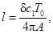
(1)
где c1 - скорость продольных
сейсмических волн в грунте, м/с (приложение 1);
Т0 - преобладающий период сейсмических колебаний
массива, определяемый в процессе изыскания, с;
А -
возможная максимальная амплитуда колебаний массива, см, определяемая в процессе
изысканий или для предварительных расчетов по графику рис. 1;
d - допускаемое конструкцией шва продольное смещение
смежных участков тоннеля относительно друг друга, см.
Примечания. 1. При
отсутствии количественных характеристик расстояние между антисейсмическими
швами в слабых грунтах следует принимать равным 20 м, в скальных - 30 м.
2.
Максимальные расстояния между антисейсмическими швами не должны превышать 40 м
для бетонных и железобетонных монолитных обделок, при этом следует совмещать
антисейсмический шов с деформационным.
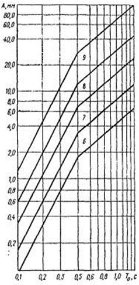
Рис. 1. Соотношение амплитуд смещений А
и периодов Т0 при колебаниях грунта,
вызванных землетрясениями интенсивностью 6 - 9 баллов
2.8. Конструкция антисейсмического шва должна
допускать взаимные продольные смещения смежных участков обделки при деформациях
без силового воздействия элементов обделки друг на друга. В случае
необходимости следует предусматривать мероприятия по гидроизоляции или осушению
обделки тоннеля.
2.9. В местах пересечения тоннелем тектонических
трещин следует устраивать дополнительные антисейсмические швы.
2.10. В местах примыкания к тоннелю камер и других
подземных выработок (дренажные и вентиляционные штольни и пр.) между этими
сооружениями и тоннелем должны предусматриваться антисейсмические швы, которые
могут быть совмещены с деформационно-осадочными швами.
2.11. Участки тоннеля в зоне тектонических трещин,
прилегающие к антисейсмическим (деформационным) швам, следует усиливать
конструктивным армированием. Общую длину участков усиления обделки
ориентировочно определяют на основе анализа данных инженерно-геологических,
гидрогеологических и сейсмотектонических изысканий и уточняют дополнительно в
период строительства.
2.12. В железобетонных конструкциях в качестве рабочей
(расчетной) арматуры следует применять стержневую арматуру из стали класса
Ас-II марки 10ГТ диаметром 10 - 32 мм по ГОСТ
5781-75. Допускается применение арматурной стали класса А-III марки 25Г2С
диаметром 6 - 40 мм по ГОСТ
5781-75. В качестве нерасчетной арматуры разрешается применять сталь A-I и
A-II по ГОСТ
5781-75 и ГОСТ
380-71* марок ВСт3сп2, ВСт3пс2, ВСт3Гпс2, ВСт5сп2 и ВСт5пс2.
Марки сталей для закладных элементов железобетонных
конструкций следует принимать по нормам проектирования железобетонных
конструкций.
2.13. Поперечное сечение обделок на прилегающих с
обеих сторон к тектоническим трещинам участках следует увеличивать в среднем на
10 %. Длина таких участков должна быть в пределах 5 наибольших поперечных
размеров выработки.
В техническом проекте предварительное количество
участков назначают по данным инженерно-геологических изыскании и уточняют по их
фактическому местоположению в процессе проходки опережающих разведочных штолен,
скважин и т.п.
2.14. При устройстве обделок незамкнутого поперечного
сечения следует обеспечить конструктивную заделку нижней части стен.
2.15. В районах сейсмичностью 8 и 9 баллов на
припортальных участках тоннелей, где налегающая толща грунта менее трех
наибольших размеров поперечного сечения выработки, следует применять
железобетонные обделки. В особо сложных инженерно-геологических и
гидрогеологических условиях при соответствующем обосновании допускается
применение обделок из чугуна.
2.16. Элементы сборных обделок необходимо соединять,
между собой связями растяжения в плоскости поперечного сечения тоннеля
(армирование стыков, сварка закладных частей в радиальных стыках железобетонной
блочной обделки, установка болтовых соединений и т.п.).
3.1. Расчет тоннельные обделок на сейсмические
воздействия следует проводить по первой группе предельных состояний.
3.2. Расчеты проводятся на
основные сочетания нагрузок, особые сочетания нагрузок, состоящие из
постоянных, длительных, возможных кратковременных и одной из особых (кроме
сейсмических) нагрузок; особое сочетание, состоящее из постоянных, длительных
нагрузок и сейсмического воздействия.
3.3. Рассчитывать конструкции
тоннелей на сейсмические воздействия следует с учетом свойств окружающих
обделку грунтов и конструкции обделки методами теории упругости или
строительной механики.
3.4. Порядок расчетов с учетом
сейсмических воздействий следующий:
уточняют сейсмичность площадки строительства тоннеля;
выбирают расчетную сейсмичность конструкций тоннеля согласно табл. 1;
тоннель разбивают на отдельные участки в зависимости
от инженерно-геологических и гидрогеологических условий и типов применяемой
обделки для каждого из участков;
выбирают методику расчета каждого участка на
сейсмическое воздействие в соответствии с п. 3.15 настоящей Инструкции;
определяют расчетные усилия и элементах обделки,
порталах от статических и сейсмических воздействий;
проверяют несущую способность (прочность) конструкций
обделки и прочность конструкций по максимальным усилиям, определяемым в
результате сравнения расчетов, выполненных согласно п. 3.2.
3.5. Обделки тоннелей глубокого заложения (заложение
шелыги свода не менее трех максимальных поперечных размеров выработки)
рассчитывают на действие сейсмических волн сжатия-растяжения и сдвига с учетом
всех возможных направлений их действия в плоскости поперечного сечения тоннеля.
3.6. Расчет шарнирных обделок участков тоннелей
глубокого заложения допускается производить на действие контактных напряжений,
определяемых методами теории упругости как для монолитных обделок, а
определение усилий производить методами строительной механики с учетом шарниров
и т.п.
3.7. В случае, если расчет обделок на статические
нагрузки ведется методами строительной механики, нагрузку от сейсмического
воздействия определяют методом теории упругости и суммируют ее со статической
нагрузкой.
В случае, если расчет обделок ведется методами теории
упругости, напряженное состояние от статических и от сейсмических воздействий
определяют отдельно и суммируют их.
3.8. Расчет обделок участков тоннелей мелкого
заложения проводится на действие инерционных сил от масс грунта и собственного
веса конструкций при вертикальном и горизонтальном направлениях сейсмического
воздействия.
3.9. Расчет портальных подпорных стен проводится на
действие горизонтальной составляющей инерционных сил от массы грунта и
собственного веса конструкций.
3.10. При расчете тоннелей на особое сочетание с
учетом сейсмических воздействий коэффициент сочетания п0
принимается равным 1.
3.11. Расчетные значения инерционных нагрузок от
собственного веса конструкций и от массы грунта следует определять в
соответствии с главой СНиП по строительству в сейсмических районах.
3.12. Интенсивность горизонтального инерционного
давления грунта на припортальные подпорные стены допускается определять по
формулам
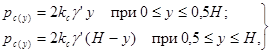
(2)
где kc - коэффициент сейсмичности,
равный 0,025, 0,05 и 0,1 при расчетной сейсмичности 7, 8 и 9 баллов
соответственно;
g' - расчетное значение
объемной массы грунта засыпки, т/м3;
H - толщина
расчетного слоя грунта, принимаемая равной расстоянию от подошвы фундамента
подпорной стены до расчетной поверхности грунта.
3.13. При расчете тоннелей на
действия сейсмических волн сжатия-растяжения и сдвига сейсмические нормальные (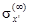
и 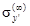
) и касательные
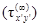
напряжения,
возникающие в массиве на бесконечности по произвольным взаимно-перпендикулярным
направлениям х' и у', следует определять на формулам
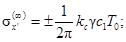
(3)
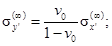
(4)
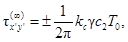
(5)
где c1 - скорость распространения
продольных (сжатия-растяжения) волн, м/с;
c2 - скорость распространения поперечных (сдвиги) волн,
м/с;
Т0 - преобладающий период колебаний частиц породы, с;
v0 -
коэффициент Пуассона грунта.
Примечания. 1. Для
предварительных расчетов в случае отсутствия данных о характеристиках грунтов,
рекомендуется использовать данные таблицы приложения 1.
2. При
расположении тоннеля глубокого заложения в однородных по сейсмической жесткости
скальных грунтах при наличии экспериментальных данных возможно уменьшение коэффициента
сейсмичности до 0,5 kc при глубине заложения тоннеля в 100 м
и более.
3. Допускается определять расчетные сейсмические напряжения в массиве
по массовой скорости колебаний частиц грунта, в соответствии с приложением 2.
3.14. При расчете на прочность элементов конструкции и
оснований тоннелей помимо коэффициентов условий работы, принимаемых для
конструкций, эксплуатируемых в несейсмоопасных районах, ввиду кратковременности
действия сейсмической нагрузки и в зависимости от материала конструкций и
соединений и типа оснований вводится дополнительный коэффициент условий работы ткр,
определяемый в соответствии с главой СНиП по строительству в сейсмических
районах.
3.15. Рассчитывают замкнутые
монолитные обделки произвольного очертания тоннелей глубокого заложения в
соответствии с разделом 4,
многослойные обделки тоннелей кругового очертания - с разделом 5, набрызгбетонные обделки с анкерами - с разделом 6, круговые обделки тоннелей мелкого заложения - с
разделом 7, обделки некругового
очертания тоннелей мелкого заложения - с разделом 8 настоящей Инструкции.
3.16. При наличии вокруг обделки ослабленного или
укрепленного (например, цементацией, смолизацией, битумизацией) слоя грунта с
модулем деформации, отличным от модуля деформации основного массива, а также
слоя грунта, закрепленного анкерами, расчет круговых обделок проводится по
разделу 5,
а для расчета некруговых обделок определяется приведенный модуль деформации
пород (приложение 3), а сам расчет проводится в соответствии с
разделом 4.
3.17. Перечень алгоритмов и программ для расчета тоннелей
на сейсмические воздействия приведен в приложении 4.
4.1. Область применения положений
настоящего раздела характеризуется следующими условиями:
а) длина проектируемого сооружения превосходит его
поперечные размеры не менее чем в 5 раз;
б) глубина заложения тоннеля превосходит наибольший
размер его поперечного сечения не менее чем в 3 раза;
в) длина упругих волн сдвига с преобладающим периодом
колебаний частиц грунта превосходит наибольший поперечный размер выработки не
менее чем в 3 раза, т.е. деформационные характеристики массива грунта таковы,
что выполняется условие
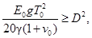
(6)
где Е0 - модуль деформации грунта
(тс/м2);
g - объемная масса грунта, т/м3;
Т0 - преобладающий период колебаний частиц грунта, с;
g -
ускорение силы тяжести, м/с2;
D -
наибольший поперечный размер выработки, м.
г) не имеется близко расположенных сооружений на
расстоянии менее 2 D.
4.2. Положения настоящего раздела возможно
использовать для приближенного расчета набрызгбетонных обделок, в том числе - в
сочетании их с анкерами, при выполнении условий п. 4.1, а также до разработки
специальной методики для расчета сборных обделок тоннелей глубокого заложения.
4.3. Массив грунта моделируется
линейно-деформируемой, однородной, изотропной средой, механические свойства
которой характеризуются средними величинами модуля деформации Е0
и коэффициента Пуассона v0.
4.4. Обделку рассматривают как замкнутую конструкцию
заданной толщины и конфигурации, работающую в упругой стадии в условиях полного
контакта с массивом по всему периметру.
4.5. Обделку рассчитывают в условиях плоской
деформации, т.е. рассматривается действие сейсмических воли, распространяющихся
в плоскости поперечного сечения сооружения.
4.6. Расчет обделки проводится на
основании оценки наиболее неблагоприятного напряженного состояния в каждом
нормальном (радиальном) сечении обделки из возможных при любых сочетаниях
одновременно действующих на обделку волн сжатия-растяжения и волн сдвига и
любых их направлениях в плоскости поперечного сечения сооружения.
4.7. Оценка наиболее неблагоприятного напряженного
состояния и каждом нормальном (радиальном) сечении проводится путем отыскания
экстремальных значений нормальных тангенциальных напряжений sq в данном сечении и соответствующих им направлений
распространения и сочетании действия волн сжатия-растяжения и сдвига.
4.8. Напряженное состояние
обделки от действия длинной, произвольно направленной (в плоскости поперечного
сечения тоннеля) волны сжатия (продольной волны) sсж
определяют на основании решения плоской квазистатической контактной задачи
теории упругости для кольца произвольной формы с одной осью симметрии,
подкрепляющего вырез в линейно-деформируемой среде с другими деформационными
характеристиками, работающего совместно с окружающей средой в соответствии с
расчетной схемой (рис. 2).
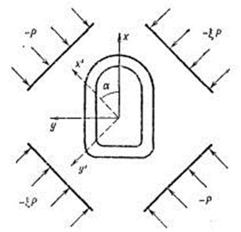
Рис. 2. Расчетная схема к определению
напряженного состояния
обделки от продольных сейсмических волн
Напряженное состояние на бесконечности принимают
согласно п. 3.13
в виде
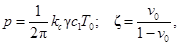
(7)
где kс -
коэффициент сейсмичности;
c1 - скорость
распространения упругих волн сжатия (растяжения), определяющаяся
непосредственными измерениями или вычисляемая по формуле
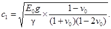
(8)
Примечание.
Для предварительных расчетов допускается использовать данные приложения 1.
4.9. Напряженное состояние
обделки от действия длинной, направленной под произвольным углом a к вертикальной оси симметрии выработки волны сдвига (поперечной волны)
sсдв
определяют на основании решения квазистатической контактной задачи, расчетная
схема которой приведена на рис. 3.
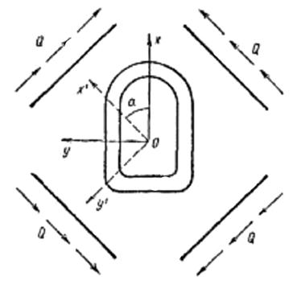
Рис. 3. Расчетная схема к определению
напряженного состояния
обделки от поперечных сейсмических волн
Касательные напряжения на бесконечности в соответствии
с п. 3.13
имеют величины
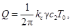
(9)
где с2 - скорость распространения
упругих волн сдвига, определяемая по формуле
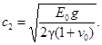
(10)
или
по данным приложения 1.
4.10. Экстремальные значения напряжений sq определяют на основании решения следующих уравнений
для каждого нормального (радиального) сечения обделки
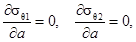
(11)
где
sq1
= sq
(сж) + sq (сдв),
sq2 = sq (сж) - sq (сдв). (12)
sq(сж),
sq (сдв)
- соответственно нормальные тангенциальные напряжения в данном сечении обделки
от действия волны сжатия и волны сдвига, направленных под углом a к вертикальной оси симметрии выработки.
В результате решения указанных уравнений (в качестве sq принимают
их выражения на внешнем и на внутреннем контуре поперечного сечения обделки)
получают четыре значения напряжений s в каждом сечении.
Затем для каждого сечения конструкции определяют те сочетания действия волн s1 или s2 и те
углы их падения a1, a2 которые
соответствуют наибольшим сжимающим (отрицательным) и наибольшим растягивающим
(положительным) напряжениям sq.
4.11. Наибольшие сжимающие и растягивающие напряжения sq в каждом
сечении принимаются за расчетные. Усилия М и N, соответствующие
этим напряжениям, вычисляют для каждого сечения именно при тех сочетаниях
действия волн разного характера и том их направлении, при которых получены
экстремальные значения напряжений sq.
4.12. Если обделка не прианкерена к грунту и
проектируется с допущением образования трещин, то за расчетные принимают обе
эпюры усилий М и N, соответствующие наибольшим сжимающим и
растягивающим напряжениям sq.
4.13. Если обделку проектируют без допущения трещин и
если она прианкерена к грунту или выполнена из набрызгбетона, то за расчетные
на сжатие и растяжение принимают эпюры усилий М и N,
соответствующие напряжениям sq, максимальным по абсолютной величине, взятые со
знаками «плюс» и «минус».
4.14. Расчетные эпюры усилий М и N
суммируют с усилиями от других видов действующих нагрузок и используют для
проверки прочности сечений на сжатие и на растяжение.
4.15. Расчет круговых обделок проводят по алгоритму,
приведенному в приложении 5, расчет обделок некругового поперечного
сечения проводят по алгоритму, приведенному в приложении 6.
5.1. Положения настоящего раздела следует использовать
для расчета многослойных обделок транспортных тоннелей круглого поперечного
сечения глубокого заложения и стволов в условиях, указанных в п. 4.1.
5.2. Методика расчета основывается на исходных
предпосылках, указанных в пп. 4.3 - 4.6, 4.8 и 4.9.
Расчетная схема показана на рис. 4 и
представляет собой многослойное круговое кольцо, наружный слой которого
моделирует массив грунта. Радиус грунтового слоя Rп
принимается равным глубине заложения выработки.
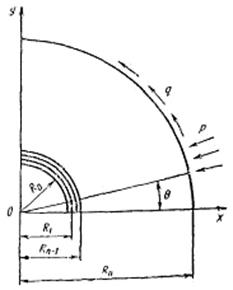
Рис. 4. Расчетная схема к определению
напряженного
состояния многослойной обделки
Расчетные напряжения, приложенные к внешнему контуру
сечения грунтового слоя, определяют по формулам
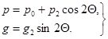
(13)
Здесь
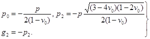
(14)
Величина р определяется согласно п. 4.8.
5.3. Экстремальные значения напряжений sq на внешнем и внутреннем контурах каждого слоя обделки
имеют место при значениях Q = 0, Q = 90°. Наибольшие сжимающие и растягивающие напряжения sq в указанных сечениях принимают за расчетные.
Проверка прочности слоев производится в упругой
стадии.
Расчетные растягивающие напряжения непосредственно
сравнивают с расчетным сопротивлением материала обделки.
Проверка прочности материала обделки на сжатие
производится с учетом объемного напряженного состояния по формуле
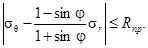
(15)
где sr - расчетные радиальные сжимающие напряжения в рассматриваемом
сечении (при растягивающих радиальных напряжениях в формулу представляется sr = 0),
см;
j - угол внутреннего трения материала обделки, град;
Rпр - расчетное сопротивление материала обделки
(призменная прочность), кгс/см2.
5.4. Если проектируемая многослойная обделка
прианкерена к грунту, то за расчетное принимают максимальные по абсолютной
величине напряжения sq, взятые со знаками «плюс» и «минус».
5.5. Расчетные напряжения sq суммируют с напряжениями от других видов действующих
нагрузок и используют для проверки прочности материала обделки при различных
сочетаниях нагрузок.
5.6. Расчет многослойных обделок производится по
алгоритму, приведенному в приложении 8.
6.1. Предварительный выбор конструкции и назначение
параметров набрызгбетонной обделки с анкерами (длины анкеров, расстояния между
ними, толщины набрызгбетонного покрытия и т.п.) производят на основании
Инструкции по применению анкеров и набрызгбетона в качестве временной крепи
выработок транспортных тоннелей (ВСН
126-78 Минтрансстрой).
Прочность обделки проверяют расчетом с учетом
сейсмических воздействий в соответствии с пп. 6.2 и 6.3.
6.2. Набрызгбетонную круговую
обделку с анкерами рассматривают при расчете как многослойную конструкцию, в
которой выделяют следующие слои:
слой грунта, закрепленный анкерами, толщина которого
принимается равной 0,8l, где l - длина анкеров, м;
слой набрызгбетона, армированный сеткой, стержнями и
т.п., принимаемый равным толщине арматуры;
слой собственного набрызгбетона.
Расчет обделки производится в
соответствии с разделом 5.
Примечание.
Модуль деформации слоя грунта с анкерами принимают равным 1,2 Е0,
где Е0 - модуль деформации грунта.
6.3. Набрызгбетонную некруговую
обделку с анкерами рассчитывают в соответствии с разделом 4 как монолитную замкнутую конструкцию (с толщиной
набрызгбетонного покрытия), причем для массива принимают значение приведенного
модуля деформации Е0пр, определяемое по приложению 3.
7.1. Расчет производится на основании решения
динамической задачи о поперечных колебаниях стержневой системы, состоящей из
упругосоединенных между собой элементов, в линейно-деформируемой среде (рис. 5).
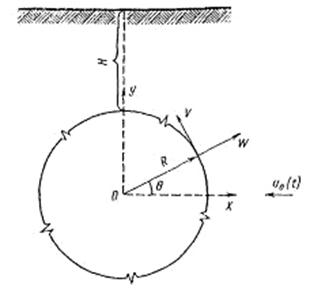
Рис. 5. Расчетная схема к определению
напряженного состояния
обделки под действием поперечного динамического воздействия
7.2. В качестве внешней нагрузки принимается
воздействие, направленное перпендикулярно продольной оси тоннеля, являющееся
следствием горизонтального перемещения грунта во времени (импульсивная
нагрузка, синусоидальная нагрузка, акселерограмма и т.д.), u0(t).
7.3. Жесткость узлов соединений элементов (блоков)
обделки между собой характеризуется коэффициентом l, который является отношением жесткостей поперечного сечения узла и
материала обделки.
Значение коэффициента l следует
принимать для шарнирной обделки 0,3, для сборной обделки с перевязкой швов и
при наличии болтовых соединении 0,5, для монолитной обделки 1.
7.4. Нормальные (W) и тангенциальные (V)
перемещения точек средней линии поперечного сечения обделки и соответствующие
им изгибающие моменты М и продольные усилия N определяются по
алгоритму, приведенному в приложении 9.
8.1. Требования настоящего раздела распространяются на
расчет обделок тоннелей некругового очертания мелкого заложения или их участков
при расстоянии от шелыги свода до поверхности не более трех наибольших поперечных
размеров тоннеля.
8.2. Порядок расчета определяется в соответствии с пп.
3.3
и 3.4.
8.3. Нагрузки на обделку определяют раздельно для
вертикального и горизонтального направлений сейсмических воздействий:
а) горизонтальную и вертикальную составляющие
сейсмической нагрузки от собственного веса обделки вычисляют по формуле
Sk = Qkkc, (16)
где Q - вес элемента обделки, отнесенный к
точке k;
б) интенсивность горизонтального инерционного давления
грунта на обделку в пределах высоты стены обделки определяют по формуле
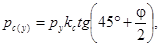
где ру - активное давление грунта,
кгс/см2;
и) горизонтальную составляющую инерционной массы
грунта засыпки над тоннелем в пределах пролета выработки, приложенную к верхней
части обделки, определяют по формуле
Pc = gHlf,
где l - ширина выработки, м;
H -
расстояние от дневной поверхности, м;
f -
коэффициент трения грунта по обделке.
г) интенсивность вертикальной составляющей 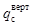
определяют по формулам
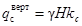
(от веса полного столба Hгрунта
над тоннелем)
или
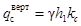
(при возможности
сводообразования, где h1 - высота свода).
8.4. Производится раздельное суммирование
горизонтальных сил от собственного веса и инерционных масс грунта (первое
сочетание) и вертикальных нагрузок от собственного веса и инерционных масс
грунта (второе сочетание), выполняется два статических расчета по первому и
второму сочетанию и проверяется прочность сечений обделки.
9.1. Конструировать и рассчитывать порталы следует в
соответствии с требованиями главы СНиП по проектированию железнодорожных и автодорожных
тоннелей, портальных подпорных стен в соответствии с требованиями норм по
проектированию подпорных стен для транспортного строительства, указаниями
раздела 3
и данного раздела настоящей Инструкции.
9.2. Порталы тоннелей в сейсмических районах в
зависимости от крутизны откосов, трещиноватости, крепости и устойчивости
грунтов склона горного массива, а также состояния подходов к тоннелю
рекомендуется проектировать врезными, наклонными с лобовой подпорной стеной
(рис. 6,
а, б) или выносными с искусственной засыпкой для уполаживания лобового откоса
(рис. 6,
в) в случае неустойчивости склонов.
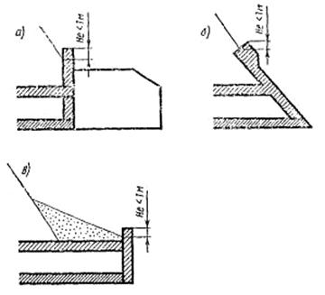
Рис. 6. Конструкции порталов тоннелей
в сейсмических районах:
а -
врезной; б - с наклонной лобовой подпорной стеной; в - выносной
9.3. Порталы тоннелей следует проектировать, как
правило, железобетонными. Допускается применение бетонных порталов на площадках
сейсмичностью не более 7 баллов при устойчивых скальных грунтах. Лобовые
подпорные стены следует конструировать из железобетона с устройством
ограждающего парапета, возвышающегося над поверхностью откоса не менее чем на 1
м.
9.4. Припортальные подпорные стены могут выполняться
как из железобетона, так и из бетона.
9.5. При назначении расположения порталов высоту
подпорных стен у откосов припортальных выемок следует принимать по данным табл.
2.
При невозможности выполнения таких требований необходимо уполаживать откосы или
выносить портал.
Таблица
2
|
Материал
подпорных стен
|
Расчетная
сейсмичность площадки, баллы
|
Высота подпорных
стен, м
|
|
Железобетон
|
8
|
12
|
|
9
|
10
|
|
Бетон
|
8
|
12
|
|
9
|
8
|
9.6. Для поддержания откосов припортальных выемок в
зависимости от используемого материала и характера наклона поверхности, а также
высоты стен следует применять массивные бетонные и облегченные железобетонные
конструкции подпорных стен. Тип проектируемой стены, ее конструкцию и размеры
следует назначать на основании технико-экономического анализа вариантов,
составляемых с учетом местных инженерно-геологических, мерзлотно-грунтовых,
сейсмических и других условий.
9.7. Припортальные подпорные степы следует разделять
на длине сквозными вертикальными швами (включая фундамент) на секции размером
не более 15 м, а в районах сейсмичностью 8 и 9 баллов - до 10 м.
Швы следует располагать так, чтобы подошва каждой
секции опиралась на однородный (по степени сжимаемости) грунт.
9.8. При расчете порталов и припортальных подпорных
стен на устойчивость против опрокидывания с учетом сейсмического воздействия
коэффициент условий работы принимают для сечений: а) бетонных конструкций -
0,75; б) по подошве фундаментов мелкого заложения для грунтов, связанных с
коэффициентом консистенции В < 0,25 - 0,75; 0,25 < В < 0,50 - 0,55; В
> 0,50 - 0,40; скальных - 0,75, несвязных с разной степенью влажности -
0,55, несвязных, средней плотности - 0,40.
9.9. В районах сейсмичностью 9 баллов для
предотвращения неблагоприятного влияния податливости основания на
сейсмостойкость припортальной подпорной стенки следует фундамент стенки
доводить до скального или полускального грунта или искусственно уплотнять
основание.
9.10. Внутренней грани припортальной стены следует
придавать наклон в сторону откоса выемки.
9.11. Дренажные устройства для отвода воды из-за
припортальных подпорных стен следует проектировать в соответствии с
требованиями норм по проектированию подпорных стен для транспортного
строительства.
9.12. Тип нижнего строения пути, применяемый в
тоннеле, следует предусматривать и за пределом портала на расстоянии не менее
10 м.
10.1. Основным назначением
создания инженерно-сейсмометрической службы на тоннелях является получение
количественных данных о параметрах колебаний конструкций тоннелей и окружающего
грунтового массива для использования этих данных при проектировании аналогичных
конструкций.
10.2. Протяженные тоннели в районах сейсмичностью 8
баллов и более оборудуются инженерно-сейсмометрическими станциями для записи
смещений, скоростей и ускорений элементов обделки и окружающего массива во
время землетрясений.
10.3. Проект инженерно-сейсмометрической станции
должен иметь общую схему размещения измерительных пунктов и регистрирующего
комплекса, полный перечень оборудования и приборов, строительную часть,
включающую рабочие чертежи размещения и крепления приборов, вспомогательного
оборудования, кабельных линий, а также чертежи основных и вспомогательных
помещений.
10.4. Общий порядок проектирования и установки
сейсмометрических приборов и оборудования на инженерно-сейсмометрических
станциях регламентируются инструкциями по организации станций
инженерно-сейсмометрической службы для регистрации колебаний зданий и
сооружений при землетрясениях.
10.5. Проектировать инженерно-сейсмометрическую
станцию следует по техническому заданию, с обязательным согласованием
организацией, на которую возлагается эксплуатация станции.
10.6. Каждая инженерно-сейсмометрическая станция на
тоннелях должна иметь, как минимум, три измерительных пункта - у портала, в
тоннеле и над тоннелем в месте наибольшей глубины заложения тоннеля.
Большое количество комплектов сейсмометрической
аппаратуры может быть запроектировано и установлено в тоннелях, пересекающих
напластования грунтов различной сейсмической жесткости, при наличии действующих
тектонических подвижек и в других случаях на основании специального
технико-экономического и сейсмологического обоснования проведенного на стадии
технического проекта.
10.7. В измерительном пункте в тоннеле одновременно
должны фиксироваться колебания элементов обделки и окружающего массива.
10.8. Если тоннель имеет несколько типов конструкции
обделок, целесообразно устраивать измерительные пункты на каждом типе обделок.
10.9. Сейсмоприемники устанавливают на рабочих
площадках, представляющих собой горизонтальные бетонные постаменты, жестко
прикрепляемые к обделке (для фиксации колебаний обделки), и заглубляемые на 0,5
- 1,0 м в грунт (для фиксации колебаний грунта).
10.10. Конструктивное оформление измерительных пунктов
должно обеспечивать надежное сочленение сейсмоприемников с обделкой и грунтом,
свободный доступ к приборам для их монтажа и наладки, надежную защиту
аппаратуры от фильтрации воды и падения кусков грунта и обделки, а также
соответствующий температурный и влажностный режим для нормальной работы
аппаратуры.
10.11. Аппаратура для измерительного и регистрирующего
комплекса состоит из магнитно-электрических и пьезоэлектрических
сейсмоприемников (датчиков) и осциллографов с гальванометрической регистрацией.
10.12. Расходы на приобретение сейсмометрической
аппаратуры и на выполнение строительно-монтажных работ, связанных с ее
установкой, должны предусматриваться в сметах на строительство сооружений.
10.13. Эксплуатацию сейсмометрической аппаратуры в
тоннеле следует осуществлять под надзором работников региональной
сейсмологической службы.
ПРИЛОЖЕНИЯ
Пример. Бетонная монолитная обделка (E1
= 3150000 т/м2; v1 = 0,15) наружным диаметром 9 м
и толщиной 0,40 м (n = 1,1), расположенная в гранодиоритах (g = 2,7 т/м2; v0 = 0,23; E0
= 400000 т/м2; ) для девятибалльного землетрясения (при Т0
= 0,5 с): с1 = 1290 м/с; р = 27,5 т/м2.
Тогда по табл. 1
N = -1,27рr1b
= -144 т;
по
табл. 2
N = 0,15рrb
= 17 т;
Общий алгоритм и примеры расчета обделок некругового
поперечного сечения на сейсмические воздействия
1. Исходными данными для расчета являются заданные
форма в размеры поперечного сечения обделки и величины
Е0 - модуль деформации грунта, кгс/см2;
v0 - коэффициент Пуассона грунта;
Е1 - модуль деформации материала обделки, кгс/см2;
v1 - коэффициент Пуассона материала обделки;
g - объемная масса грунта, кгс/см3;
kс
- коэффициент сейсмичности;
Т0 - преобладающий период колебаний частиц грунта.
2. Расчет состоит из трех этапов:
построение конформного отображения;
определение корней основных систем уравнений;
определение расчетных напряжений и усилий в обделке.
3. Первый этап - построение конформного отображения -
состоит в определении коэффициентов q1, ..., q4
функции вида
реализующей конформное преобразование внешности
окружности радиуса R1 < 1 в плоскости z в область, занимаемую кольцом заданной формы и средой в плоскости z,
таким образом, чтобы единичная окружность перешла в линию контакта.
4. Построение конформного отображения осуществляется в
два приема: сначала отыскивается функция вида
реализующая отображение внешности единичной окружности
(в плоскости z1) на
внешность внутреннего контура поперечного сечения (в плоскости z), при
этом окружность радиуса переходит во внешний контур; далее
производят преобразование, состоящее в том, чтобы окружность радиуса в плоскости z1 перешла
в единичную окружность в плоскости z. При этом внешний
контур поперечного сечения перейдет в единичную окружность, а внутренний - в
окружность радиуса
5. Отображение внешности единичной окружности на
внешность внутреннего контура поперечного сечения обделки может быть выполнено
любым из известных способов. В приложении 7 дается описание
графоаналитического способа П.В. Мелентьева. В результате получают значения
коэффициентов а0, а1,..... а5.
6. Для определения радиуса окружности , которая при
отображении переходит во внешний контур поперечного сечения обделки, решают
уравнение пятой степени вида
где h1 - расстояние от начала
координат, являющегося центром описанной около внутреннего контура окружности,
до точки пересечения внешнего контура с вертикальной осью ох.
В качестве берется
действительный корень уравнения пятой степени, больший единицы.
7. Коэффициенты функции, реализующей последующее
отображение, определяют по формулам
где
8. Второй этап - определение корней основных систем
уравнений - состоит из следующих операций:
а) определяют величины
и
находят входящие в расчетные соотношения комбинации упругих постоянных
материала обделки и окружающей выработку грунта по формулам
б) определяют вспомогательные величины по формулам
в) составляют матрицу системы десяти линейных
уравнений (система 1) вида
Коэффициенты при неизвестных cv в
первых четырех уравнениях определяют по формулам
Коэффициенты при неизвестных аv (v
= 1, 2, ..., 6) первых четырех уравнений определяют из соотношений
Коэффициенты при неизвестных сv (v
= 1, ..., 4) в остальных шести уравнениях вычисляют по формуле
Коэффициенты при неизвестных аv (v
= 1, ..., 6) последних шести уравнений определяют по формулам

г) систему уравнений 1 решают дважды со свободными
членами групп 1а и 1б, вычисляемыми по формулам:
Группа свободных членов 1а
Группа свободных членов 1б
В результате получают соответственно две группы корней
1а и 1б;
д) составляют систему уравнений 2,
коэффициенты матрицы которой получаются из соответствующих коэффициентов
матрицы системы 1 по формулам:
Остальные коэффициенты матрицы 2 остаются теми же, что
в системе 1;
с) систему уравнений 2 решают со свободными членами
группы 1б, за исключением члена , который должен быть вычислен по формуле
В результате решения системы 2 получают третью группу
корней - с1(2), ..., с4(2), а1(2),
..., а6(2).
Полученные три группы корней la, 1б и 2 являются
основой для определения напряжений и усилий в обделке.
9. Третий этап расчета - определение
напряжений и усилий в обделке - включает следующие операции, выполняющиеся
сначала при Q = 0°, а затем с изменением угла Q с заданным шагом до 180°:
а) вычисляют значения
б) определяют величины
в) при значениях r = l и r = R1 вычисляют
величины
г) определяют составляющие напряженного состояния s(1а), s(1б), s(2) по формулам
с подстановкой входящих величин , , , соответствующих групп
1а, 1б и 2;
д) вычисляют величины
и
определяют значения экстремальных нормальных тангенциальных напряжений на внутреннем
и внешнем контурах поперечного сечения обделки по формулам:
е) из значений А, В, С, D
выбирают наибольшее отрицательное и наибольшее положительное.
Если наибольшим того или иного знака окажется число А,
то определяют соответствующий ему угол падения волн a1 по
формуле
и находят напряжения sr, tr, sqвнеш в
долях величины р из соотношений
Если наибольшим окажется число С, то для
определения напряжений sr, trθ, sqвнутр
в последнюю формулу следует подставить значение угла a1,
вычисленное по формуле пункт «е», в которой вместо величин sqвнутр
использованы величины sqвнеш.
Если наибольшим того или иного знака окажется число В,
то определяют соответствующий угол
а
напряжения sr, trθ, sqвнеш
определяют из соотношений
Если же наибольшим окажется число D, то при
определении a2
используют значение a1,
вычисленное с подстановкой вместо sqвнутр величин sqвнеш. Напряжения sr, trθ, sqвнутр
определяют по последней формуле.
В результате получают по две эпюры напряжений sr, trθ, sqвнеш, sqвнутр
соответствующих наибольшим сжимающим (отрицательным) и наибольшим растягивающим
(положительным) нормальным тангенциальным напряжением в обделке, которые могут
возникнуть при совокупном действии волн сжатия и сдвига.
ж) определяют безразмерные координаты точек
внутреннего и внешнего контуров поперечного сечения обделки по формулам
и
относительную толщину обделки
з) для обоих полученных вариантов напряженного
состояния обделки определяют безразмерные величины М и N по
формулам
и) угол Q измеряют от 0° до
180° с заданным шагом, например через 15°, и повторяют третий этап расчета.
10. Полученные усилия соответствуют наибольшим
сжимающим и растягивающим напряжениям sq в обделке в
предположении, что растягивающая нормальная нагрузка на конструкцию не
передается. Использование этих двух вариантов усилий рекомендуется для проверки
прочности сечений при сжатии и растяжении, если обделка проектируется с
допущением образования трещин.
Если предполагается, что обделка работает совместно с
окружающим массивом грунта и при наличии нормального растяжения на контакте
(например, обделка прианкерена к породе, выполнена из набрызгбетона или
проектируется без допущения образования трещин с максимальным запасом
прочности), то из полученных двух для каждого вида напряжений и усилий эпюр
выбирают те, которые соответствуют напряжениям sq в обделке,
наибольшим по абсолютной величине. За расчетные принимают как для проверки
прочности сечений при сжатии, так и при растяжении, указанные эпюры усилий,
взятые со знаками «плюс» и «минус»
11. Расчетные значения напряжений умножают на величину
где c1 - скорость распространения
упругих волн сжатия (растяжения), характеризующая соотношением
либо
определяемая непосредственными измерениями в массиве;
g -
ускорение силы тяжести.
Расчетные значения изгибающих моментов М
умножают на величину рR2b, а продольных сил N - на pRb,
где b - единица длины в продольном направлении сооружения.
12. Если требуется провести расчет раздельно на
действие волны сжатия или волны сдвига, падающей под заданным углом a к вертикальной оси симметрии выработки, то следует воспользоваться
формулами
где символом s обозначены все
напряжения от единичной нагрузки. Усилия определяют через напряжения по
формулам п. 9,з
данного приложения.
13. Примеры
13.4. Отладочный вариант расчета.
Исходные данные:
Е0 = 176
× 104 тс/м2, Е1 = 220 × 104
тс/м2, v0 = 0,25, v1 = 0,16, kc
= 0,1, T0 = 0,5 с, g = 2,5 т/м3,
h1 = 9,25 м.
Форма и размеры поперечного сечения обделки даны на
рис. 1.
Рис. 1. Схема обделки для отладочного
варианта расчета
Коэффициенты отображающей функции (получены согласно
данному приложению) имеют величины:
а0 = 6,900833, а1 = 0,149705, а2
= 1,171667,
а3 = 0,221667, а4
= -0,688333, а5 = 0,253628.
Расчетные эпюры усилий приведены на рис. 2 (а
- изгибающие моменты в тм, б - продольные силы в т). Сплошными линиями
показаны усилия, которые, будучи взятыми со знаками «плюс» и «минус», соответствуют
максимальным сжимающим и растягивающим напряжениям sq в обделке в предположении полного контакта ее с
массивом грунта и при наличии растягивающих нормальных контактных напряжений.
Пунктиром показаны усилия, соответствующие максимальным растягивающим
напряжениям sq в обделке, в предположении, что нормальная
растягивающая нагрузка на конструкцию не передается (усилия, соответствующие
максимальным сжимающим напряжениям, в этом случае те, которые показаны
сплошными линиями).
Рис. 2. Расчетные эпюры усилий
(изгибающих моментов и продольных сил)
для отладочного варианта расчета (значения ординат пунктирной и
сплошной линиями см. в тексте)
Величины нормальных давлений на обделку sr/р и касательных напряжений trq/p на контакте обделки с грунтом в точках,
находящихся на пересечении, показанных на рис. 2, сечений с внешним контуром, а
также величины поперечных сил Q/p в сечениях, расположенных
посредине между показанными на рис. 2 (на оси симметрии Q =
0), даны в таблице.
|
№ сечений
|
Единичные
контактные напряжения и поперечные силы
|
|
При полном
контакте
|
При невозможности
реализации растягивающей нагрузки
|
|
sr/р
|
trq/p
|
Q/p
|
sr/р
|
trq/p
|
Q/p
|
|
1
|
-0,56
|
0
|
|
-0,15
|
0
|
|
|
2
|
-0,54
|
-0,05
|
0,01
|
-0,02
|
-0,07
|
0
|
|
3
|
-0,52
|
-0,05
|
0
|
-0,05
|
-0,15
|
0
|
|
4
|
-0,50
|
0,04
|
-0,02
|
0,06
|
0,23
|
0,01
|
|
5
|
-0,42
|
0,12
|
0,01
|
0,11
|
-0,23
|
0,02
|
|
6
|
-0,31
|
0,08
|
0,04
|
0,09
|
-0,11
|
0,01
|
|
7
|
-0,25
|
-0,02
|
0,03
|
0,03
|
0,04
|
0
|
|
8
|
-0,22
|
-0,13
|
0,01
|
-0,05
|
0,17
|
-0,01
|
|
9
|
-0,29
|
-0,27
|
-0,01
|
-0,11
|
0,27
|
-0,02
|
|
10
|
-0,61
|
-0,21
|
-0,14
|
0,03
|
0,25
|
-0,02
|
|
11
|
-0,55
|
0,26
|
0,06
|
-0,01
|
-0,11
|
0
|
|
12
|
-0,31
|
0,19
|
0,10
|
-0,15
|
-0,08
|
0,01
|
|
13
|
-0,27
|
0
|
0,01
|
-0,16
|
0
|
0
|
Знак «минус» у контактных напряжении, продольных и
поперечных сил означает сжатие, у изгибающих моментов - относительное
растяжение внешнего волокна.
Таким образом, в данном случае, учитывая, что нагрузка
р = 57,3 тс/м2, контактные напряжения sr составляют величины до 3,5 кгс/см2 и если
считать, что эти величины не превышают сцепления обделки с грунтом (при
отсутствии других видов нагрузок) и обделка проектируется без допущения
образования трещин или прианкеренной к грунту, то в качестве расчетных нужно
принимать усилия М и N, данные на рис. 2 сплошными линиями, со знаками
«плюс» и «минус». Эти усилия отражают как максимальные сжимающие, так и
максимальные растягивающие напряжения sq в обделке от сейсмических
воздействий. При этом расчетные давления на обделку, касательные напряжения на
контакте и поперечные силы в сечениях обделки будут те, что даны в первой части
таблицы, также со знаками «плюс» и «минус». Если же обделка не прианкерена к
грунту и проектируется с допущением образования трещин, то расчетными для
проверки прочности обделки на сжатие являются эпюры М и N из рис.
2
(сплошные линии) и Q из первой части таблицы, а на растяжение - эпюры М
и N из рис. 2 (пунктир) и Q - из второй части таблицы.
В этом случае также возможно появление растягивающих нормальных контактных
напряжений, но не по всему периметру поперечного сечения, а лишь на его части,
причем не превышающих 0,7 кгс/см2 (контактные напряжения sr/р и касательные напряжения trq/p, соответствующие максимальным растягивающим
напряжениям sq, даны во второй части таблицы).
Рис. 3. Эпюры усилий (сплошная линия и
пунктир) в обделке при действии
волны сжатия, падающей под углом 120° к направленной вверх оси симметрии
Рис. 4. Эпюры усилий (сплошная линия и
пунктир) в обделке
На рис. 3 приведены в качестве иллюстрации эпюры усилий N
(сплошная линия) и М (пунктир) в обделке при действии волны сжатия,
падающей под углом a = 120° к направленной вверх оси симметрии (угол a отсчитывается против часовой стрелки). На рис. 4 даны эпюры
продольных сил N (сплошная линия) и изгибающих моментов М
(пунктир) от падающей под углом a = 120° волны сдвига.
Как видно из рис. 3 и 4, эпюры усилий не имеют осей
симметрии, так как направление распространения волн не совпадает ни с
вертикалью, ни с горизонталью.
13.2. Обделка железнодорожного тоннеля.
Исходные данные:
Е1 = 315 × 104 тс/м2, v1
= 0,15, Е0 = 7 × 104 тс/м2, v0
= 0,3, g = 2,63 т/м3, = 0,1, T0 =
0,5 с, d = 0,5 м.
Рис. 5. Расчетные эпюры усилий в
обделке железнодорожного тоннеля.
Расшифровку ординат см. в тексте
Расчетные эпюры усилий приведены на рис. 5
(сплошные линии - усилия, соответствующие максимальным сжимающим, пунктир -
максимальным растягивающим напряжениям sq в обделке).
Построение конформного отображения графо-аналитическим
способом П.В. Мелентьева
Строят конформное отображение для определения
коэффициентов отображающей функции а0, а1,
..., а5, характеризующих форму поперечного сечения обделки и
используемых в качестве исходных данных для машинного расчета на ЭВМ малой
мощности.
Для нахождения указанных коэффициентов выполняют
следующие операции:
1. Вычерчивают в масштабе (1:100, в случае небольших
размеров выработки - 1:50) половину симметричного внутреннего контура
поперечного сечения обделки. Начало координат располагают внутри контура на
вертикальной оси симметрии, вдоль которой направляется ось 0-X (рис. 1) и
совпадает с центром окружности, описанной вокруг контура.
2. Половину симметричного контура разбивают лучами 0,
I, ..., VI, исходящими из начала координат на 6 частей (лучи проводят под углом
30° друг к другу).
3. Из того же центра проводят окружности, касающиеся
контура изнутри (их может быть несколько), и, если один луч пересекает две
окружности, то для следующего построения выбирают окружность большего радиуса.
4. На отрезках лучей I, ..., V, заключенных между
описанной около контура и касающимися контура изнутри окружностями, как на
диаметрах, строят вспомогательные окружности, пересекающие контур в двух
точках.
5. Из двух точек пересечения выбирают наиболее
удаленную от начала координат, и из нее на соответствующий луч опускают
перпендикуляр. Расстояние этой точки до луча обозначают vn, а
длину луча от начала координат до пересечения с перпендикуляром обозначают un.
6. Значения читают на шкале прозрачной
палетки (рис. 2),
вычерченной на кальке в масштабе одно деление - 1 см, если контур вычерчен в
масштабе 1:100, и одно деление - 2 см, если контур дан в масштабе 1:50. Палетку
накладывают на чертеж таким образом, чтобы шкала и совпадала с n-ным
лучом, а шкала v - с перпендикуляром, опущенным на луч из точки
пересечения вспомогательной окружности с контуром.
Примечания. 1. Величины и равны нулю,
поэтому в качестве и принимают длины соответствующих лучей от
начала координат до пересечения с контуром.
2. Все
необходимые графические построения показаны на рис. 1.
Рис. 1. Схема к отысканию
коэффициентов отображающей
функции графоаналитическим способом П.В. Мелептьева
7. Решают систему семи уравнений
относительно неизвестных у которой в качестве свободных членов
берут измеренные величины .
Матрица системы уравнений для определения дана в
таблице.
8. Корни системы уравнений п. 7 дают первое приближение
коэффициентов отображающей функции.
Рис. 2. Палетка для определения
значений
9. Найденные из решения системы
п. 7 величины подставляют в формулу для определения , имеющую вид
|
Коэффициенты
отображающей функции
|
Свободные члены
|
|
|
|
|
|
|
|
|
|
1
|
1
|
1
|
1
|
1
|
1
|
1
|
|
|
1
|
0,866
|
0,5
|
0
|
-0,5
|
-0,866
|
-1
|
|
|
1
|
0,5
|
-0,5
|
-1
|
-0,5
|
0,5
|
1
|
|
|
1
|
0
|
-1
|
0
|
1
|
0
|
-1
|
|
|
1
|
-0,5
|
-0,5
|
1
|
-0,5
|
-0,5
|
1
|
|
|
1
|
-0,866
|
0,5
|
0
|
-0,5
|
0,866
|
-1
|
|
|
1
|
-1
|
1
|
-1
|
1
|
-1
|
-1
|
|
10. Для нахождения следующего приближения прозрачную
палетку со шкалами u1 v (рис. 2) накладывают на
соответствующий луч, после чего передвижением шкалы u вдоль луча
добиваются того, чтобы полученное значение оказалось на пересечении контура
со шкалой v. При таком положении палетки на шкале и читают значения .
Примечание. Величины
и остаются
прежними.
11. Вновь производят операции пп. 7, 9, но в
качестве свободных членов системы п. 7 берут значения .
12. Указанным образом определяют второе приближение
коэффициентов отображающей функции и т.д.
13. Операции продолжают до тех пор, пока
построение следующего приближения не будет вносить существенной поправки в
величины vn.
Примечание.
Как правило, для реальных очертаний обделок достаточно трех приближений.
14. Проверку соответствия полученного контура
исходному осуществляют по формулам для координат точек
15. Решают систему уравнений п. 7
относительно коэффициентов ап, определяют величины vn
и координаты точек, отображенного контура по программе на ЭВМ1).
____________
1) П.В.
Мелентьев. Приближенные вычисления. М., Физматгиз, 1962.
Алгоритм и примеры расчета многослойных круговых
обделок тоннелей
Обделку рассматривают как (п - 1) слойное
кольцо; п-й слой - бесконечно толстый массив.
Задаваемые расчетные нагрузки неравномерны по углу Q, отсчитываемому от оси, проходящей через максимум радиальной нагрузки
sr
= p0 + p2cos2Q;
trq
= Q2sin2Q,
где sr и trq - радиальная и касательная составляющие нагрузок;
p0, p2 и Q2 -
параметры нагрузок (задаются или вычисляются по приведенным формулам).
При расчете обделок, слои которых неоднородны по
механическим свойствам, например, бетонные с арматурой гибкой или жесткой или
слои с ребристыми тюбингами, учитывают неравномерность распределения напряжений
по сечению. Неоднородность материалов в каждом слое характеризуется
коэффициентом (степенью) армирования, которая определяется отношением площади
сечения арматуры к площади сечения слоя. Если внутренним слоем обделки являются
ребристые тюбинги без заполнения пространства между ребрами, то степень
армирования выделенного слоя ребер определяют отношением площади сечения ребер
к площади междуреберного пространства и ребер.
Исходные данные для расчета
1. Свойства грунта в массиве:
Е0 - модуль деформации, кгс/см2;
v0 - коэффициент Пуассона;
g - объемная масса грунта, кгс/см3;
kc
- коэффициент сейсмичности;
T0 - преобладающий период колебаний частиц грунта;
c1 - скорость распространения упругих волн сжатия-растяжения,
см/с, определяют по формуле
2. Данные по обделке:
п - 1 -
количество слоев;
Ri
- радиусы контуров слоев (i = 0, 1, ... n
- 1);
Ai
- степень армирования слоев (i = 1, 2, ... n
- 1);
-
модули деформации материалов слоев (кгс/см2);
- основного материала;
- арматуры;
vi
- коэффициенты Пуассона материалов слоев.
3. Сейсмические воздействия:
4. Порядок расчета:
i = 1, 2, ..., n - 1;
{akl}, {bkl},
{gkl}, {dkl} - квадратные матрицы
(3×3).
i = 1, 2, ..., n - 1;
для n-го бесконечного слоя коэффициенты ,
где 1 £ i £ n - 1 - при расчете обделки совместно с массивом;
5. Напряжения в элементах обделки
Значки «вс», «вб», «нс», «нб» указывают сечения, в
которых определяют напряжения: «в» - на внутреннем контуре слоя; «н» - на
наружном контуре слоя; «с» - в своде (по оси действия максимальной нагрузки);
«б» - в боках (по оси, перпендикулярной направлению действия максимальной
нагрузки). Верхний индекс «j» указывает на материал, в котором
определяют напряжения: например j = 1 - бетон, j = 2 - арматура; i
- номер слоя.
Рис. 1. Конструкция многослойной
кольцевой обделки:
1 - слой без заполнения; 2, 5 - слои
спинки чугунных тюбингов; 3 - слой бетона;
4 - слой комбинированный (ребра тюбингов и бетонное заполнение)
6. Пример расчета обделки, состоящей из двух слоев
чугунных тюбингов с заполненным бетоном между ними, рис. 1.
Свойства грунта в массиве:
модуль деформации - 7000 кгс/см2;
коэффициент Пуассона - 0,30;
объемная масса 0,00202 кгс/см3;
коэффициент сейсмичности - 0,1;
преобладающий период колебаний Т0 -
0,5 с.
Параметры обделки приведены в табл. 1.
Параметры нагрузок на слои обделки приведены в табл. 2.
Таблица
1
|
№
слоя
|
Радиус, см
|
Отношение площадей
поперечного сечения ребер (арматуры) ко всему слою F2/F1
|
Модули деформации,
кгс/см2
|
Коэффициент
Пуассона
|
|
E1
|
E2
|
|
5
|
474
|
0
|
1000000
|
1000000
|
0,25
|
|
4
|
471
|
0,1
|
240000
|
1000000
|
0,15
|
|
3
|
447
|
0
|
240000
|
240000
|
0,25
|
|
2
|
377
|
0
|
1000000
|
1000000
|
0,25
|
|
1
|
374
|
0,1
|
0
|
1000000
|
0,15
|
|
0
|
350
|
|
|
|
|
Таблица
2
|
№
слоя
|
Параметры
нагрузок, кгс/см3
|
Примечание
|
|
р0
|
р2
|
Q2
|
|
5
|
1,1656
|
0,1663
|
-1,5841
|
Внешняя нагрузка
|
|
4
|
1,0722
|
-0,0789
|
-2,0519
|
|
3
|
0,8873
|
-0,7343
|
-3,0466
|
|
2
|
0,2691
|
-0,9499
|
-2,0446
|
|
1
|
0,1208
|
-0,4559
|
-1,0206
|
Эпюры напряжений в шелыге свода и на горизонтальном
диаметре в сечениях по ребрам и межреберному заполнению в кг/см2
показаны на рис. 2.
Рис. 2. Эпюры напряжений по сечениям
многослойной обделки:
а - сечение в шелыге свода по ребрам; б - то же
по межреберному заполнению;
в - сечение на горизонтальном диаметре по ребрам; г - то же по
межреберному заполнению
(«плюс» - сжатие, «минус» - растяжение)
Алгоритм и пример расчета круговых обделок тоннелей
мелкого заложения
1. Исходные данные:
-
плотность материала обделки, т×с2/м4;
h - толщина
обделки, м;
R - радиус
средней линии поперечного сечения обделки, м;
v1 - коэффициент Пуассона материала обделки;
Е1 - модуль деформации материала обделки, тс/м2;
D - внешний
диаметр обделки, м;
Н - глубина
заложения тоннеля, м;
l - коэффициент, определяемый согласно разделу 7;
a, b - коэффициенты, принимаемые по таблице;
g - объемная масса грунта, т/м3;
f -
коэффициент крепости грунта по Протодьяконову;
п - число
блоков в кольце обделки;
т -
задаваемое число участков деления блока обделки;
v - скорость частиц грунта, м/с, определяемая по приложению 2
настоящей Инструкции.
|
Грунты
|
Коэффициенты
|
|
a
|
b, кг/см3
|
|
Супеси, глинистый грунт, лесс,
гравии, суглинки твердые и глинистые
|
3,04
|
3,35
|
|
Средине крупнозернистые пески,
мелкий песок с дресвой
|
3,13
|
0,50
|
|
Пылеватые супеси, пластичные,
суглинки полутвердые
|
1,13
|
0,50
|
2. Вычисляют вспомогательные коэффициенты по формулам:
3. Вычисляют функции b(t) по
формуле
Здесь ü0(t)
- ускорение грунта, зависящее от вида внешнего воздействия (см. пример
расчета);
t - параметр интегрирования.
Эпюры моментов (а) и продольных
сил (б) в круглой сборной обделке
4. Вычисляют
и , где i = 1, ..., mп + 1.
5. Определяют значения перемещений и
силовых факторов по формулам
6. Пример расчета.
Произведем расчет сборной обделки тоннеля кругового
очертания из железобетонных элементов. Исходные данные:
r1 = 0,25 т×c2/м4; h = 0,4 м; R = 4,3 м; v1 = 0,15; v0 = 0,3; E1 = 3,15
× 106 т/м2; l = 0,5; b = 3350 т/м3; f = 0,8; g = 1,8 т/м3;
H = 30 м; a = 3,04; D = 9,0 м; ;
i = 1, ..., mп + 1; m = 7, n = 7 за внешнюю нагрузку
принимаем прямоугольный импульс в виде
где v = 0,16 м/с - скорость колебаний частиц
породы, соответствующая землетрясению 8 баллов (см. таблицу приложения 2);
t = 0,1 с -
продолжительность импульса.
Максимальные значения перемещений и усилий при
указанных данных получают при t = 0,06 с. Эпюры М и N
показаны на рисунке, откуда видно, что
Мmax
= 0,49 тм, Nmax = -157,02 т.
СОДЕРЖАНИЕ